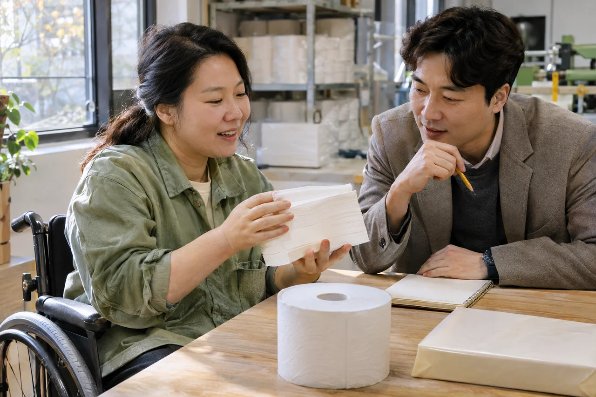

기업의 주문과 일터를 잇는 연계고용
사무실의 종이 제품을 정기 발주하면 생산과 포장을 맡은 장애인 근로자의 일로 이어집니다. 부담금 납부 의무가 있는 기업은 연계고용 도급계약을 통해 감면도 신청할 수 있습니다.
제품·용역 살펴보기
연계고용은 어떻게 이루어지나요?
기업이 직업재활시설 등 대상 사업장에 제품 생산이나 일을 맡기는 도급계약에서 출발합니다. 계약을 이행하면 부담금 납부 의무가 있는 기업은 그 실적을 바탕으로 감면을 신청할 수 있습니다.
한국장애인고용공단 제도 안내정기 구매 예산을 활용합니다
구매 담당자는 사무실 소모품의 규격과 수량, 포장·조립처럼 맡길 작업의 범위를 정합니다. 시설과 생산 여건, 납기, 도급계약 조건을 협의합니다.
주문은 근로자의 일로 이어집니다
두리손잡고의 작업은 원자재 입고에서 시작해 생산, 검수·포장, 적재로 이어집니다. 정기 발주는 근로자가 동료와 역할을 나누고 작업 경험을 쌓는 기회가 됩니다. 기업은 발주 기간과 거래 실적을 근거로 ESG의 사회(S) 분야에서 어떻게 협력했는지 설명할 수 있습니다. 시설의 생산 공정 보기
기업은 부담금 감면을 신청할 수 있습니다
납품과 대금 지급을 마친 뒤 기업이 관할 공단에 신청합니다. 감면액은 거래 규모와 시설의 고용 실적에 따라 달라집니다. 공단의 2026년 예시에서는 월 100만 원씩 1년간 거래한 기업의 연간 감면액이 600만 원입니다. 이 예시의 계산 조건
사무실 핸드타월을 정기 발주한다면
구매 담당자가 첫 상담을 준비하는 가상 예시입니다.
사용량을 파악합니다
사업장에서 한 달에 쓰는 핸드타월의 수량과 현재 규격을 살펴봅니다. 여러 곳에 납품받으려면 지점별 수량과 배송지도 함께 정리합니다.
시설과 조건을 맞춥니다
희망 납품 주기와 첫 납품일을 알려주세요. 시설에서 해당 규격을 생산할 수 있는지, 연계고용 도급계약으로 진행할 수 있는지 계약 전에 확인합니다.
신청 자료를 모읍니다
기업은 납품받을 때마다 거래 내역과 대금 지급 자료를 보관합니다. 신청 시 시설에서 제공할 매출·고용 관련 증빙도 미리 협의해 둡니다.
자주 묻는 질문
이미 구입한 물품에도 적용되나요?
연계고용 도급계약을 체결한 뒤 계약에 따라 납품받은 실적부터 산정합니다. 이전에 일반 구매로 받은 물품은 소급해 감면받을 수 없습니다.
부담금을 내지 않는 기업도 주문할 수 있나요?
제품 구매는 시설에 문의할 수 있습니다. 연계고용 부담금 감면은 장애인고용부담금 납부 의무가 있는 기업·기관이 신청하는 제도입니다.
계약할 때 어떤 비용을 확인해야 하나요?
견적에 제품 단가, 포장·배송비, 별도 작업비가 어디까지 포함되는지 확인하세요. 상담 비용과 최소 주문 수량은 시설에 문의해 주세요. 정기 납품은 주기와 물량, 계약 갱신 조건을 함께 협의합니다.
연계고용을 하면 직접 채용한 인원이 늘어나나요?
근로자의 고용관계는 시설에 있습니다. 기업의 장애인 의무고용 현황은 직접 고용한 인원을 기준으로 관리하며, 연계고용 거래 실적은 부담금 감면을 신청할 때 반영합니다.
물품 구매 외에 어떤 일을 상담할 수 있나요?
임가공·포장 작업은 견본과 작업 순서, 완료 수량을 정리해 문의해 주세요. 판촉물, 원두, 방역도 필요한 품목이나 서비스 지역을 알려주시면 개별 상담을 통해 가능 여부를 확인할 수 있습니다.
우리 기업의 예상 감면액은 어디에서 보나요?
직업재활시설 안내에서 거래액과 감면 한도가 어떻게 연결되는지 숫자로 확인할 수 있습니다. 실제 금액은 기업과 시설의 실적을 바탕으로 공단이 심사합니다. 감면 계산 사례
필요한 제품이나 작업을 말씀해 주세요
품목·예상 수량·희망 일정을 바탕으로 직업재활시설과 계약 및 납품 가능 여부를 상의할 수 있습니다.